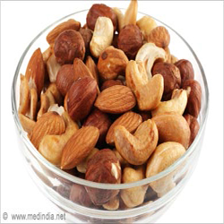

ဆံပင္ အဖ်ားႏွစ္ ခြျဖစ္ ျခင္း

၁။ ဆံပင္ အဖ်ား ေတြကို မွန္ မွန္ ညွပ္ ပစ္ပါ။ မညွပ္ ဘဲ အၾကာၾကီးထားမယ္ ဆိုရင္ ေတာ့ အဖ်ားႏွစ္ ခြျဖစ္ ဖို႔ ရာခိုင္ ႏႈန္း မ်ားလာပါလိမ့္ မယ္။

၂။ သံလြင္ ဆီ၊ အုန္း ဆီတို႔ႏွင့္ ဦး ေရကို မၾကာခဏ ႏွိပ္ နယ္ ေပးပါ။ အဆိုပါ ဆီမ်ားက ဆံပင္ ကၽြတ္ ျခင္း၊ ဆံပင္ အဖ်ားႏွစ္ ခြျဖစ္ ျခင္း တို႔ကို ထိ ေရာက္ စြာ ေလွ်ာ့ခ် ေပးႏိုင္ ပါတယ္။ ႏွိပ္ နယ္ ျပီး ေနာက္ တစ္ နာရီၾကာမွ ညင္ ညင္ သာသာ ေခါင္း ေလွ်ာ္ ပါ။
၃။ သ ေဘ္ာသီးမွာပါတဲ့ ပရိုတင္း က ဆံပင္ ရဲ႕ေတာက္ ေျပာင္ မႈ၊ စိုစြတ္ မႈ၊ က်န္း မာသန္ စြမ္း မႈတို႔ကို အေထာက္ အပံ့ျဖစ္ ေစပါတယ္။ သ ေဘ္ာသီး ႏွစ္ စိတ္ ကို ညက္ ေအာင္ ေျချပီး ဆံသားမ်ား ေပၚတြင္ လိမ္းပါ။ သို႔ ဒိန္ ခ်ဥ္ စားပြဲတင္ ဇြန္း ၂ ဇြန္း ႏွင့္ ေရာျပီး ဆံသားမ်ား ေပၚတြင္ လိမ္း ပါ။
၄။ ေထာပတ္ သီးက ဆံပင္ ကို နက္ ေမွာင္ ေပ်ာ ေပ်ာင္း ေစပါတယ္။ ေထာပတ္ သီးကို ညက္ ေအာင္ ေျချပီး အထူးသျဖင့္ အဖ်ားႏွစ္ ခြျဖစ္ ေန ေသာ ေနရာ ေတြကို လိမ္း ပါ။ မိနစ္ ၃၀ခန္႔ အၾကာတြင္ ေခါင္း ေလွ်ာ္ပါ။

၅။ သစ္ ေစ့၊ ေထာပတ္ သီးတို႔ကို ပံုမွန္ စား ေပးျခင္း ျဖင့္ ဆံပင္ အဖ်ား ႏွစ္ ခြျဖစ္ ျခင္း ကို ကာကြယ္ ေပးႏိုင္ ပါတယ္။